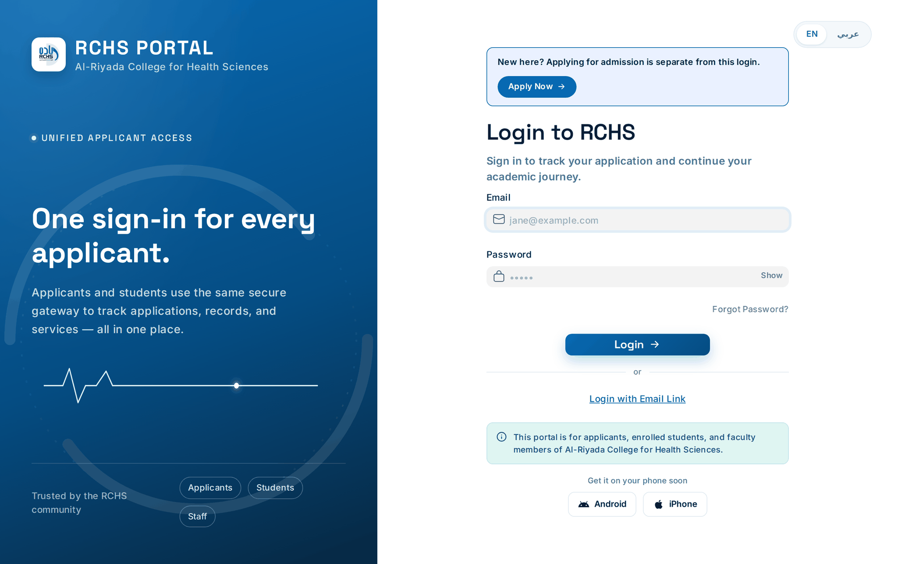
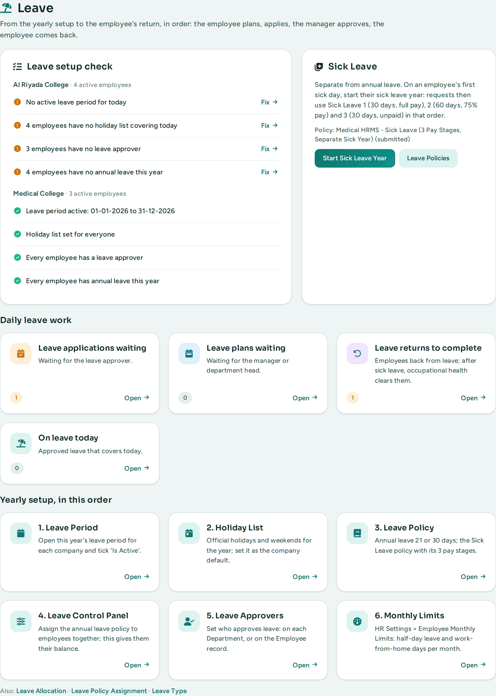
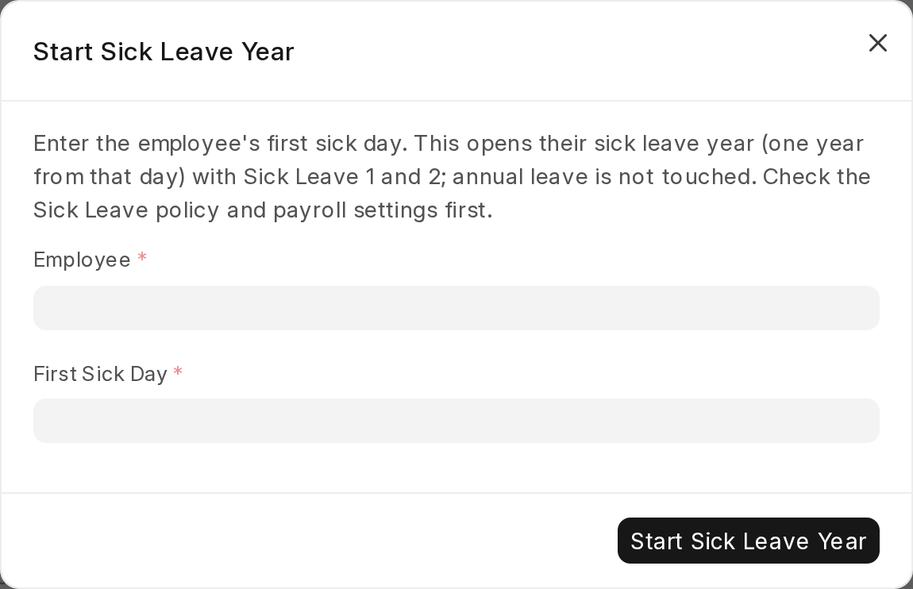
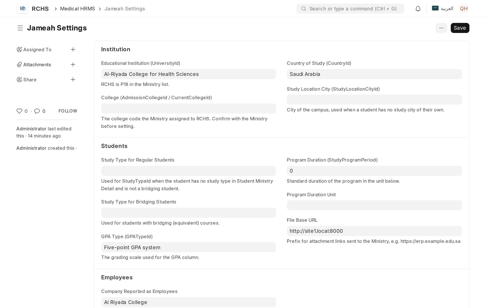
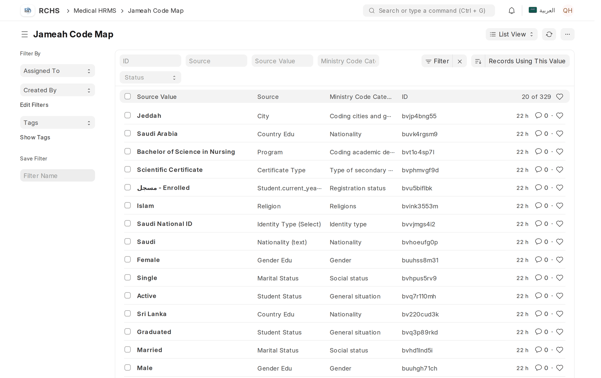
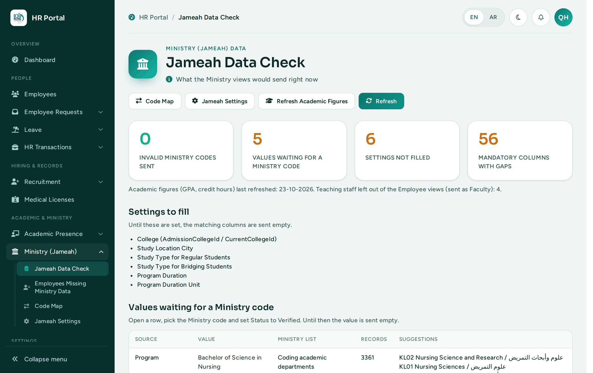
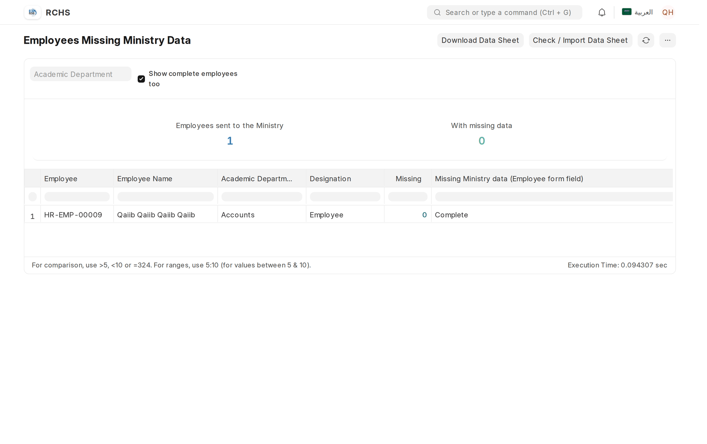

Medical HRMS is one Frappe app, medical_hrms. It adds the college's HR processes on top of the standard Frappe HR (HRMS) app, and the Jameah views the Ministry's data agent reads. The standard apps are not modified.
| Part | What it gives the college |
|---|---|
| HR Portal | One page for HR: requests waiting for a decision, leave setup check and sick leave, recruitment, Ministry data, academic presence (/app/hr-dashboard). |
| Employee Portal | Self-service for every employee: 11 request types, the leave flow (plan, apply, return), balances and monthly limits (/app/employee-dashboard). |
| Requests | Permission, Remote Work, Salary Certificate, Overtime pre-approval, Training, Children Medical Allowance, Company Car, Employee Data Update, Leave Plan, Leave Return, Contract Renewal (HR only), Medical Licence. |
| Leave | Editable starter leave types and policies (annual 21 / 30 days), sick leave in 3 pay stages with its own sick year, monthly half-day and work-from-home limits. |
| Recruitment | Job Application Links, the public application form, review, and Create Employee (with login and, for academic roles, Instructor / Academic Advisor / Head of Department records). |
| Ministry codes | 9,867 official Ministry lookup codes, loaded on every migrate, used on Employee and applicant fields. |
| Jameah views | 23 read-only database views in the Ministry's format: Employees 5, Faculty 8, Students 10, with a Data Check page, a Code Map and an independent verification. |
| Academic presence | Faculty and proctor schedules, students on campus per hour, faculty after 4 PM. |
frappe, erpnext, hrms, education.phpdevpro/edu-alriyada-hrm. The branch to install is develop.bench --site <site> backup --with-files.education app (master branch). Update it on the server in the same deployment.Run these commands as the bench user, in the bench folder. Replace <site> with the site name.
cd ~/frappe-bench bench get-app git@github.com:phpdevpro/edu-alriyada-hrm.git --branch develop bench --site <site> install-app medical_hrms bench --site <site> migrate bench build --app medical_hrms bench --site <site> clear-cache bench restart
The app folder must end up as apps/medical_hrms, and sites/apps.txt must list each app on its own line (see Troubleshooting).
Traceback. The last part rebuilds the Jameah academic figures and takes a few minutes. If it prints a line starting with Kept (they hold data ...), send that line to the developer.Every migrate runs the app's setup steps, so a new site and an updated site end up the same. Nothing has to be run by hand.
| Step | What it does |
|---|---|
| Ministry codes | Loads or updates the official Ministry lookup codes (Jameah Ministry Code). |
| Ministry fields | Adds the Ministry and Jameah fields and tables to Employee and Instructor (identity, nationality, job rank, qualifications, experience, ...). |
| Jameah | Creates the Jameah doctypes and settings, refreshes the Code Map, creates the 23 views and rebuilds the academic figures. |
| HR permissions | Gives HR roles the access their pages need (for example read on Company, Holiday List, Instructor). |
| Employee Self Service | Creates the employees' workspace. |
| Leave starter records | Creates the leave types (annual, Sick Leave 1 / 2 / 3, unpaid) and draft policies if they are missing. Existing records and HR's changes are kept. |
| Monthly limits, presence | Adds the HR Settings fields for monthly half-day / work-from-home limits and for academic presence. |
| Patches | One-time data changes listed in patches.txt (for example the sick-leave renaming). |
configure_hrm_request_governance, quick_grant_hr_permissions and apply_hr_workspace_layout. Do not run them: the doctypes now carry their own permissions, and configure_hrm_request_governance would replace them.bench --site <site> backup --with-files.cd ~/frappe-bench/apps/medical_hrms git fetch origin git checkout develop git pull --ff-only origin develop
education app to its current master in the same deployment (see section 2).cd ~/frappe-bench bench --site <site> migrate bench build --app medical_hrms bench --site <site> clear-cache bench restart
| Check | How | Expected |
|---|---|---|
| Scheduler and workers | bench --site <site> doctor | Scheduler enabled; workers for short, default and long. |
| Ministry views | bench --site <site> execute medical_hrms.jameah.verify.run | Every view OK (23). |
| Error Log | Open /app/error-log, newest first. | No new errors since the update. |
| HR login | Log in as an HR Manager. | The HR Portal opens. |
| Employee login | Log in as an employee whose user is linked to an Employee record. | The Employee Portal opens with their name. |
| System e-mail | Email Account Notifications → send a test e-mail. | The e-mail arrives. |
| Logo | Open /files/rchs-logo.png. | The college logo shows. |

Done once by the system owner (HR Manager or System Manager) after the first installation, and checked at the start of every leave year.
Every person who logs in needs a User. Employees also need their User linked on their Employee record (field User ID); this gives them the Employee role and the Employee Portal.
| Role | Who has it | What it allows |
|---|---|---|
| HR Manager | Head of HR, HR system owner | Everything in the HR Portal, including the staff data sheets, starting a sick leave year, Jameah Settings and the Code Map. |
| HR User | HR officers | Process requests, employees, leave and recruitment. Read-only on Jameah Settings and the Code Map; cannot use the staff data sheets or start a sick leave year. |
| Employee | Every member of staff | The Employee Portal: own requests, own leave, own records only. |
| Leave Approver | Managers named as leave approver | Approve the leave of the employees they approve for. |
| Department Head | Heads of department | Approve training, travel and expense claims above the department-head limit. |
| Finance Manager / Accounts Manager | Finance | The finance step on money requests and amounts above the finance limit. |
| Education Manager | Academic Affairs | Jameah Data Check, Jameah Settings and the Code Map. |
| System Manager | IT | Everything (administration). |
Approval limits by amount (checked when a request is approved):
| Request | Department Head | HR Manager | Finance |
|---|---|---|---|
| Training | above 10,000 | above 30,000 | above 50,000 |
| Travel | above 15,000 | — | above 50,000 |
| Expense claim | above 5,000 | — | above 20,000 |
| Company car | — | — | always (final approval) |
| Children medical allowance | at most 3 children per academic year; at most 30,000 approved per child | ||
@alriyada.edu.sa) as Company Email; the Create Employee dialog asks for it.The HR Portal has a Leave section with a Leave setup check per company and the yearly setup steps in order. Work through the steps until every line of the check is green.

Sick leave is separate from annual leave and follows the Saudi Labour Law: Sick Leave 1 30 days full pay, then Sick Leave 2 60 days at 75% pay, then Sick Leave 3 30 days unpaid, within one sick year that starts on the employee's first sick day.

In HR Settings:
| Field | Meaning |
|---|---|
| Enable Monthly Half-day Limit | Limit half-day leave per calendar month. |
| Leave Type Subject to Half-day Limit | Which leave type the half-day limit applies to (usually annual leave). |
| Half-day Requests per Calendar Month | The limit. |
| Enable Monthly Work-from-home Limit | Limit remote-work days per calendar month. |
| Work-from-home Working Days per Calendar Month | The limit. |
| Academic Holiday List | Holiday list used by Academic Presence (days without classes). |
| Suspends Regular Classes | Event types that cancel classes on that day. |
| Faculty After-hours Cut-off | The time used by "Faculty After 4 PM". |
Jameah is the Ministry's data system. Its agent reads the college's data from read-only database views in the Ministry's format. Medical HRMS creates and maintains these views; this section sets them up and checks them.
| Group | Views | One row per |
|---|---|---|
| Employees (5) | jameahEmployeePersonalInfo, …AcademicQualifications, …AcademicExperience, …PreviousExperience, …ProfessionalCertificates | Non-teaching employee of the reported company; table row |
| Faculty (8) | jameahFacultyPersonalInfo, …Research, …AcademicQualification, …AcademicExperience, …PreviousExperience, …ProfessionalCertificates, …Awards, …Attachments | Active Instructor; table row |
| Students (10) | jameahStudentPersonalInfo, …Companion, …ForeignAddress, …Relatives, …KSAAddress, …HighSchoolCertificate, …Contact, …Scholarship, …AcademicDetails, …Attachments | Student; guardian / certificate / document row |
EnglishFourhtName and Summury).Open HR Portal → Ministry (Jameah) → Jameah Settings. Values left empty are sent empty. Academic Affairs confirms them with the Ministry.
| Setting | Meaning |
|---|---|
| Educational Institution (UniversityId) | RCHS is P18 in the Ministry list. |
| College (AdmissionCollegeId / CurrentCollegeId) | The college code the Ministry assigned to RCHS. |
| Country of Study | Country of the campus. |
| Study Location City | Campus city, used when a student has no study city. |
| Study Type for Regular / Bridging Students | Study type sent for regular and for bridging students. |
| GPA Type | The grading scale of the GPA column. |
| Program Duration and Unit | Standard duration of the programme. |
| File Base URL | Prefix for attachment links, e.g. https://erp.alriyada.edu.sa. |
| Company Reported as Employees | Only this company's (non-teaching) employees are sent. |

Some college lists keep their own codes (for example every city has code 90). The Code Map links each college value to the official Ministry code. Rows whose code and name agree with the official list are verified automatically; the others wait for a person.

The Jameah Data Check page shows what the views would send right now: invalid codes (must be 0), values waiting for a code, settings not filled, mandatory columns with gaps and problems in the source records. Use it after every data change.

GPA, credit hours and the latest enrolment come from a summary table rebuilt every hour (long queue, about 10 minutes), after every migrate, and with Refresh Academic Figures on the Data Check page. They equal the transcript (the college's official calculation). Only one rebuild runs at a time.
bench --site <site> execute medical_hrms.jameah.verify.run
Rebuilds every view independently in Python and compares it with the database view value by value. Every line must say OK; it also lists mandatory gaps and invalid codes per view.
bench --site <site> execute medical_hrms.jameah.views.grant_statements
Prints the CREATE USER and GRANT SELECT statements for a read-only account that can read the 23 views and nothing else. Run them as the MariaDB administrator with a strong password, then give the Ministry the host, port, database, user and password.
Non-teaching staff (HR Manager): open Ministry (Jameah) → Employees Missing Ministry Data. The report lists every employee the views send with each Ministry-mandatory value still empty.

Teaching staff (existing Instructors without an Employee record): the administrator exports a sheet for HR, HR fills it, then it is checked and imported:
bench --site <site> execute medical_hrms.instructor_data_sheet.export_sheet # HR fills the sheet and uploads it (Desk > File); check it (nothing is saved): bench --site <site> execute medical_hrms.instructor_data_sheet.import_sheet --kwargs "{'file': '/private/files/<name>.xlsx'}" # when the check is clean, import for real: bench --site <site> execute medical_hrms.instructor_data_sheet.import_sheet --kwargs "{'file': '/private/files/<name>.xlsx', 'commit': 1}"
QA_TEST_SITE. Never run them on the live server.| Test | Command (from apps/medical_hrms) | Passes when |
|---|---|---|
| Every file | python3 tests/checks/files.py | PROBLEMS: 0 |
| Every hook, doctype and record | ../../env/bin/python tests/e2e/fx.py tests/checks/site.py | PROBLEMS: 0 |
| Every server method, by role | python3 tests/checks/api_methods.py (bench running, QA logins loaded) | TO REVIEW: 0 |
| Unit tests | bench --site <test site> run-tests --app medical_hrms (once per test site: bench --site <test site> set-config allow_tests true) | OK |
| Ministry views | bench --site <site> execute medical_hrms.jameah.verify.run | Every view OK |
| Browser suite (95 checks) | See tests/e2e/README.md: load the QA data, run e2e_full.py, remove the QA data | 95/95 passed |
Results of these checks go into the Test Cases workbook in project_tracking/ (column Last automated run). The testing team then works through the same workbook by hand; see the User Guide, section "Testing the system".
| Problem | What to do |
|---|---|
| "App medical_hrms not in apps.txt" | Put each app on its own line in sites/apps.txt (frappe, erpnext, payments, education, hrms, medical_hrms), then install and migrate again. |
| An employee sees "No leave to apply for yet" | They have no annual leave assigned: HR Portal → Leave setup check (section 6.3). |
| "Failed to decrypt key ... password" in the Error Log | Email Account Notifications: enter the password again and save (section 6.2). |
| Pages slow for a few minutes every hour | The Jameah academic summary is being rebuilt. Check the Scheduled Job Log (summary.refresh). On the live server, report it if it is noticeable. |
| An HR user without the Employee role gets "Not permitted" on Employee Self Service | Expected: that workspace is for employees. HR works from the HR Portal. |
| Academic hire refused with "College E-mail Needed" | Enter the official @alriyada.edu.sa address as Company Email in the Create Employee dialog. |
| A Ministry column is empty | Jameah Data Check: a setting not filled, a Code Map row not verified, or data missing on the record (report / data sheet). |
| Logo missing on every page | Upload rchs-logo.png again (Website Settings / File). |
# install (first time) bench get-app git@github.com:phpdevpro/edu-alriyada-hrm.git --branch develop bench --site <site> install-app medical_hrms # every update cd apps/medical_hrms && git fetch origin && git checkout develop && git pull --ff-only origin develop && cd ../.. bench --site <site> migrate bench build --app medical_hrms bench --site <site> clear-cache && bench restart # checks bench --site <site> doctor bench --site <site> execute medical_hrms.jameah.verify.run # Jameah bench --site <site> execute medical_hrms.jameah.views.grant_statements # read-only account for the Ministry # Ministry codes from a new Ministry workbook bench --site <site> execute medical_hrms.import_ministry_excel_to_jameah_codes.execute --kwargs "{'file_path':'/absolute/path/Ministry Code - (Translated).xlsx'}" # teaching-staff data sheet bench --site <site> execute medical_hrms.instructor_data_sheet.export_sheet bench --site <site> execute medical_hrms.instructor_data_sheet.import_sheet --kwargs "{'file': '/private/files/<name>.xlsx'}"
Documents in the repository: README.md, DEVELOPER_SETUP.md, medical_hrms/jameah/README.md and VIEWS.md (every Ministry column and its source), project_tracking/ (Task Tracker, Test Cases, Checklist).